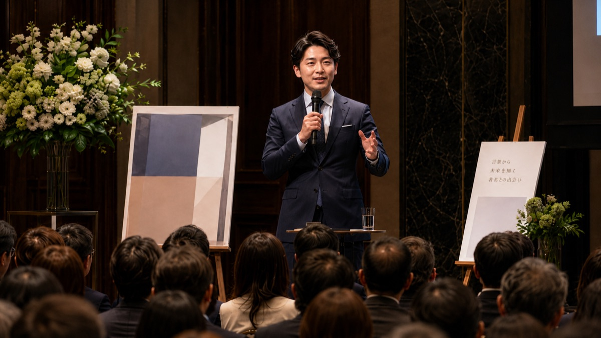

彼は「本」を使いました。
これはある勤務医の話です。
彼の日常は、深夜に救急搬送の呼び出しがあり、そのまま緊急手術に入り、翌朝から通常勤務が続きます。
20年間も単身赴任をしている上司の背中を見ながら「自分の人生、このままでいいのか」と思いながら働いていました。
将来への不安をなくしたくて、株やサイドビジネスに手を出しましたが、どれもうまくいきませんでした。そこで出会ったのが不動産でした。2019年に投資を始め、3年で家賃収入が医師の年収を超えました。今や家賃年収は3,000万円、総資産は3億円を超えています。
自分が成果をだせるようになるにつれて、見えてくるものがありました。同じ境遇の医師が悪徳業者に騙され、知識がないまま踏み出して痛い目に遭っている。その姿が他人事には思えませんでした。
その思いで本をつくりました。不動産インフルエンサーが乱立する市場に、「現役医師が医師だけに教える不動産投資」という切り口で入っていきました。同じことをしている人が、どこにもいませんでした。
動画教材と組み合わせてリリースすると界隈でバズりました。初年度から営業利益1,000万円／月を達成し、稼働しているのは著者一人です。
「誰もいない場所」を
選んだことが、
そのまま強さになった。
「本を出版して誰もいない場所を選んだ」
——簡単に言えばそうなります。

消耗の原因は、努力不足ではありません。
「選ばれる理由」を伝えられる構造
を持っていないからです。
出版社は本づくりのプロです。でも、本の使い方は教えてくれません。彼らのビジネスは「本をつくること」であって、「あなたの事業の構造を変えること」ではないからです。
実際、出版後に後悔する経営者は後を絶ちません。
ベストセラーになれば成功、ならなければ失敗。そう思っている経営者ほど、本の力を使いきれていません。
本をうまく活用している経営者には共通点があります。ブランディングしたい、PRしたい、有名になりたいという短期的な目的で本をつくっていません。経営戦略に紐づけた明確な意図をもって、本を「使って」います。
本は出して終わりではありません。
むしろ、
出版してからが本番です。
あの医師が手に入れたのは、ベストセラーではありませんでした。「誰もいない市場」でした。
本を出したことで、比較する相手がいなくなりました。説明しなくても伝わる顧客だけが来るようになりました。自分がいなくても回る仕組みが生まれました。
これをIP化と呼びます。※ IP（Intellectual Property＝知的財産）とは、著者の知識・経験・思想を形にした資産のことです。「あなたが選ばれる理由」を構造にすること——それがIP化です。本は、そのための手段です。売れるかどうかより、誰に届くかを設計する。届け方まで考えて初めて、本は経営の武器になります。

出版で著者の想いや専門性、実績を体系化できるように設計し、出版記念講演会につなげました。その結果、「御社にしか頼めない」という顧客だけが集まり、コンサル案件が10件以上成立しました。
出版で「業界内でのポジション確立」を設計しました。その結果、「独自メソッドなんてない」と語っていたカウンセラーが、業界内で一流と認知されました。出版2ヶ月でテレビキー局からオファー、1年で3事業を展開しています。
なぜこの事業をしているのか。どんな失敗を乗り越えてきたのか。その根源的な動機こそが、比較されない本の核になります。
自慢話でも自伝でもありません。見込み客が「自分に関係ある話だ」と感じる設計に落とし込みます。競合との違いは機能ではなく、「考え方の違い」で示します。
本を出して終わりにしません。問い合わせ動線、セミナーとの連携、SNSとの組み合わせなど、本を軸にした集客・営業フローごと設計します。
指名買いが起きると、顧客の質が変わります。説明コストが下がります。任せられる仕組みが生まれます。本は一度つくれば、長く効き続ける資産になります。

広告、SNS運用、ブランディングコンサル──どれも止めれば終わります。毎月同じ費用がかかり続ける「消費」です。でも、本は違います。一度つくれば半永久的に使い続けられる「資産」になります。
一冊の本は、広告でもパンフレットでもなく、
「経営者そのもの」を届けるメディアです。
つくるのは一度。使えるのは、ずっと。

代表取締役 ／ 編集者
白山 裕彬
HIROAKI SHIROYAMA
出版社勤務時代、無名の処女作家を数多く発掘し、自主企画の重版率は業界平均の4倍以上を記録。0.075%と言われる中、10万部ベストセラーを10年以上毎年達成。担当書籍はハリウッドやディズニーで映画化され、延べ２００作品以上を手掛ける。2024年に新流舎を設立し、出版を起点とした企業IP化戦略を展開中。
クライアント実績
売上
無名のベンチャー企業が本をきっかけに
売上２．５倍
採用
地方の金融系中小企業が
安定した新卒採用継続・高い定着率
メディア
グーグル検索数ゼロだった著者が
テレビのキー局から出演オファー
出版が自社に合うかどうか、まだわからなくて大丈夫です。まずはLINEから、気軽に相談してみてください。無理な売り込みは一切しません。
まずは気軽に話してみる ▶LINE登録はこちら完全無料 ・ 強引な営業なし ・ 秘密厳守